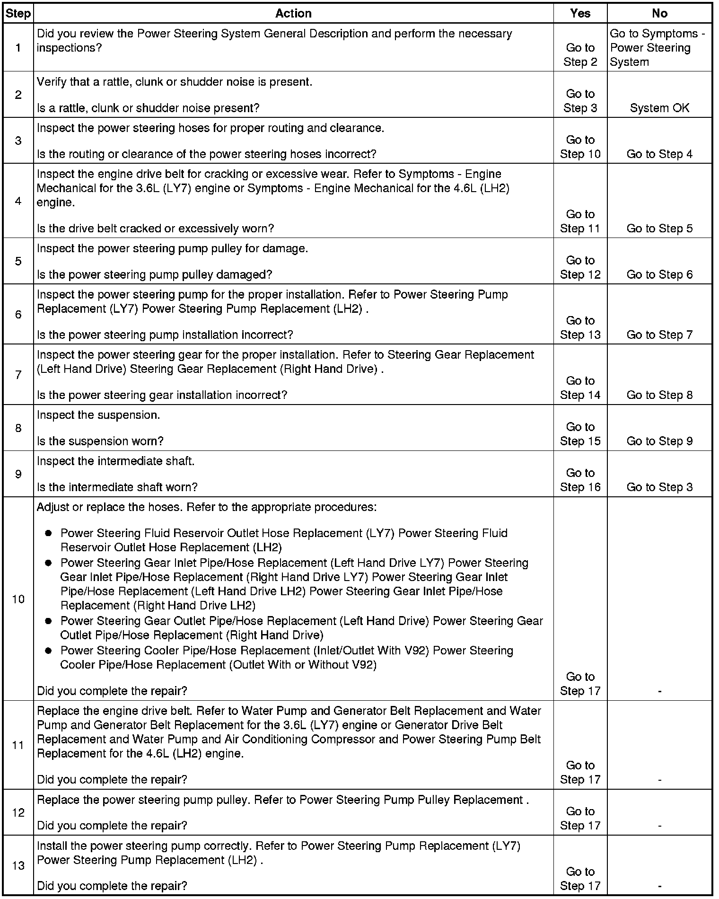
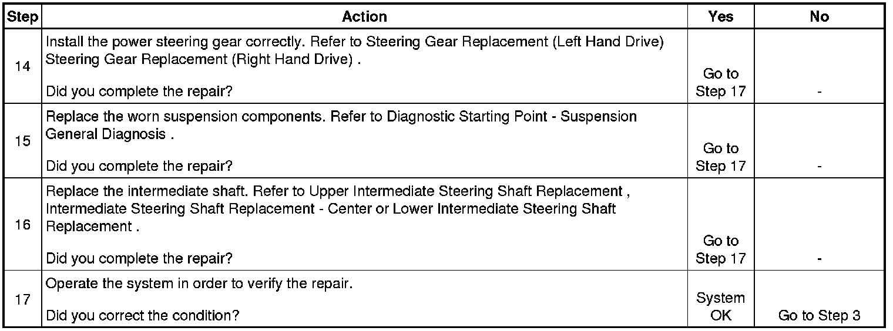

Operation CHARM
: Car repair manuals for everyone.
Home
>>
Cadillac
>>
2008
>>
SRX AWD V8-4.6L
>>
Repair and Diagnosis
>>
Steering and Suspension
>>
Steering
>>
Testing and Inspection
>>
Symptom Related Diagnostic Procedures
>>
Rattle, Clunk, or Shudder Noise from the Power Steering System
Rattle, Clunk, or Shudder Noise from the Power Steering System
Rattle, Clunk, or Shudder Noise from the
Power Steering
System

